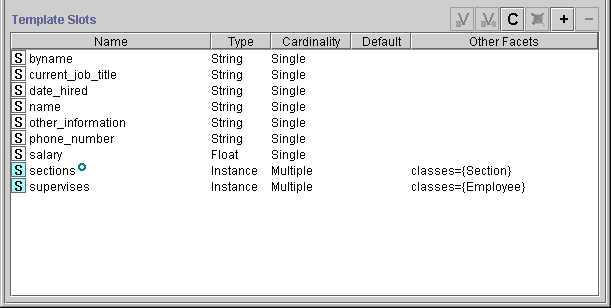

The Template Slots pane at the bottom of the Class Form displays the direct and inherited slots for the selected class. Slots, which represent properties of your class, are a crucial part of your knowledge base.
The Template Slots pane provides the following information:
In the example, Editor has several slots which appear in the Template Slots pane.

The buttons at the upper right of the Template Slots pane have the following actions. See the separate Template Slot Buttons topic for more information:
You can also view, create, and delete slots, as well as view back-references, directly from the Slots Tab. See the Slot Buttons for more information.
The icons at the left of the column indicate where the slot was created.
| A gray icon means that the slot is inherited from one of the selected class's ancestors. Inherited slots can be edited but not deleted. byname is an inherited slot. | |
| A blue icon means that the slot is "direct", that is, it was created directly on the selected class. responsible_for is a direct slot. |
An icon to the right of the column indicates a slot that has been modified:
| A small circle means that the slot has been modified at the class. If the slot was created directly and modified later, this icon is still displayed. |
The remaining columns in the Slot Templates Pane summarize the information that was entered or edited in the Slot Form or Slots Tab.
| Column | Meaning |
| Slot Name | Displays the name of the slot. |
| Type |
Indicates the kind of values that the slot may hold. Available types are: Any, Boolean, Class, Float, Instance, Integer, String, and Symbol. |
| Cardinality | Indicates whether a slot value can consist of Multiple items or must be a Single item. |
| Default | Displays the default value, if any. The default can be defined in the Slot Form or Slots Tab. |
| Other Facets | Displays any other facets defined in the Slot Form or Slots Tab. The content of this column depends on the type of the slot. For type Integer slots, for example, the range can be displayed in the last column. For type Instance slots the allowed classes are displayed. The published_in slot is an Instance slot with an allowed class of Newspaper. |
Next: The Template Slot Buttons